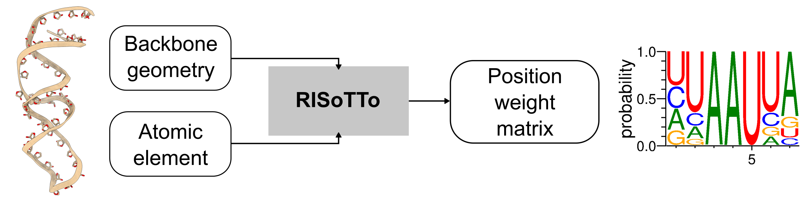

RISoTTo: context-aware RNA sequence design
A parameter-free geometric deep learning approach that generates RNA sequences conditioned on both their backbone scaffolds and the surrounding molecular context. Presented at the NeurIPS 2025 AI4D3 workshop.
